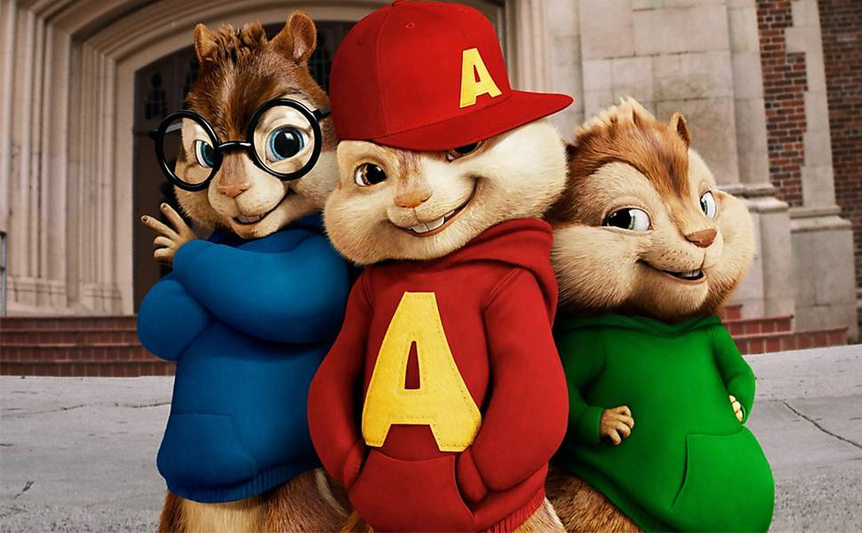

Alvin e os esquilos 
Eu tinha todos os dvd's deles e assistia todos os dias, o tempo inteiro. Minha mãe adorava ver o mesmo filme 30 vezes junto comigo, tenho certeza disso. O 3 é o melhor, sem dúvida nenhuma
Eu tinha todos os dvd's deles e assistia todos os dias, o tempo inteiro. Minha mãe adorava ver o mesmo filme 30 vezes junto comigo, tenho certeza disso. O 3 é o melhor, sem dúvida nenhuma
O segundo é Matilda, eu ia na casa da minha vizinha que era minha melhor amiga na época, e nós assistíamos seguidas vezes. A parte que o menino era obrigado e engolir o bolo inteiro era a nossa preferida!
Por último, esse filme extremamente emocionante, que mostra a superação de vida de um pai e filho que viviam em uma realidade difícil. Eu lembro muito bem de chegar da escola, colocar esse dvd para rodar enquanto almoçava vendo esse filme